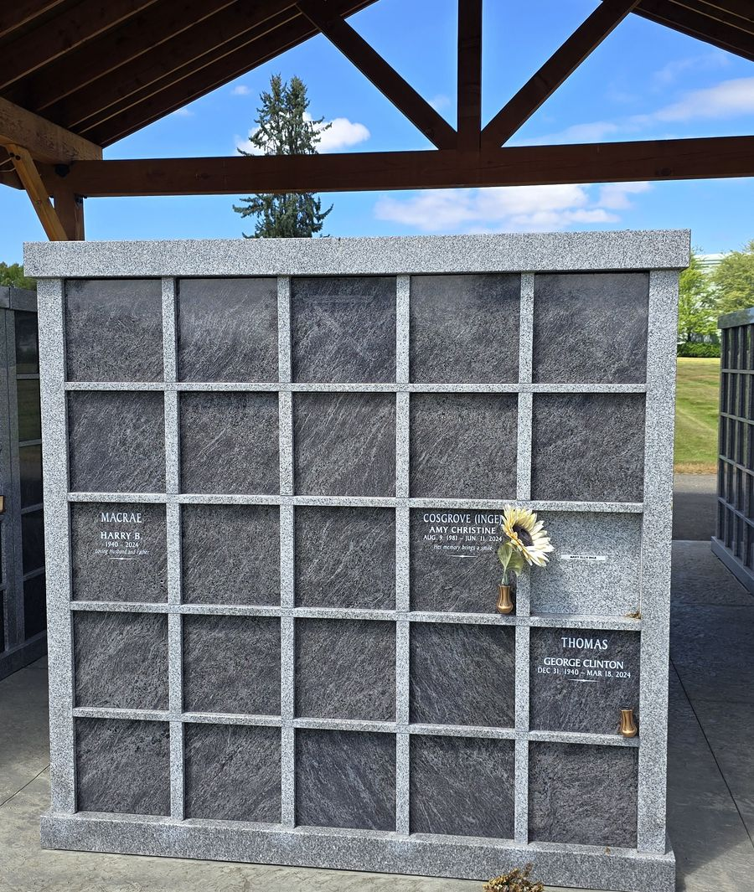
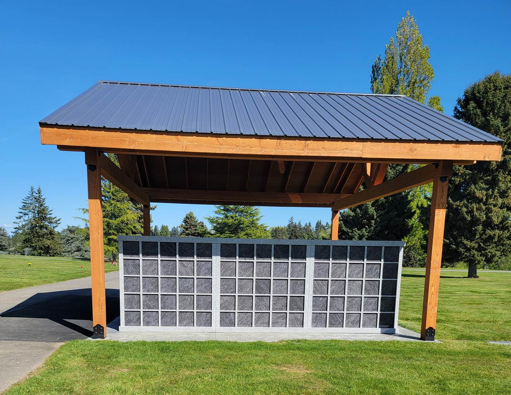
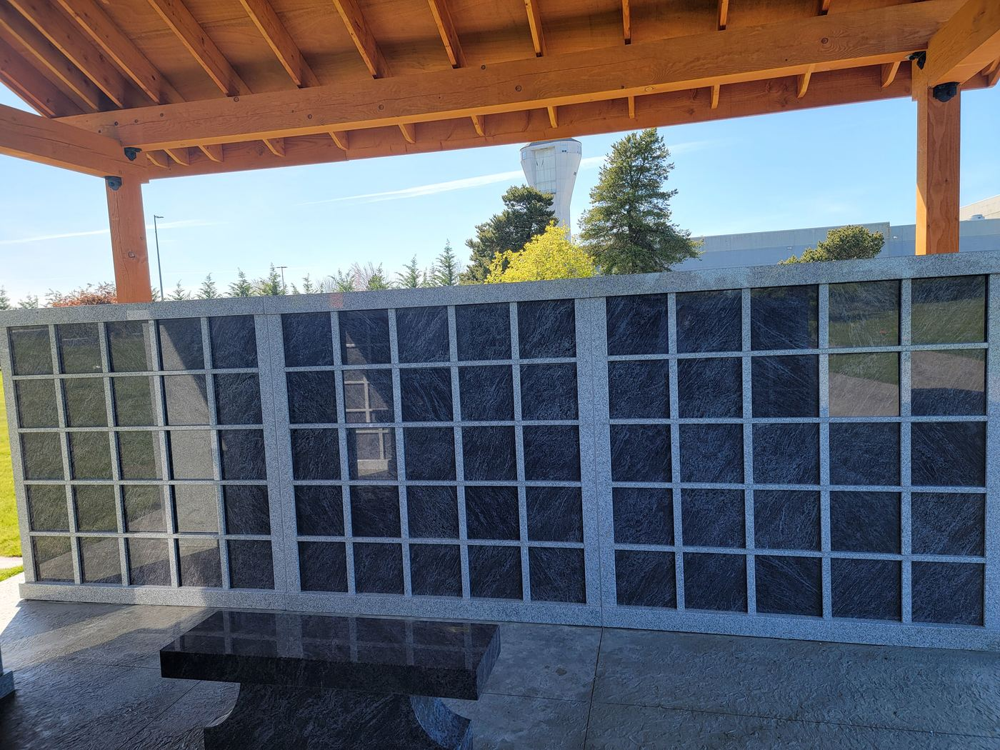
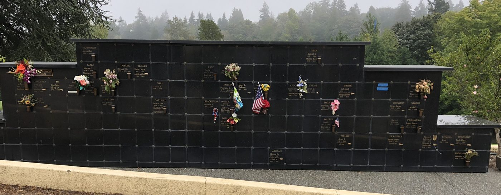
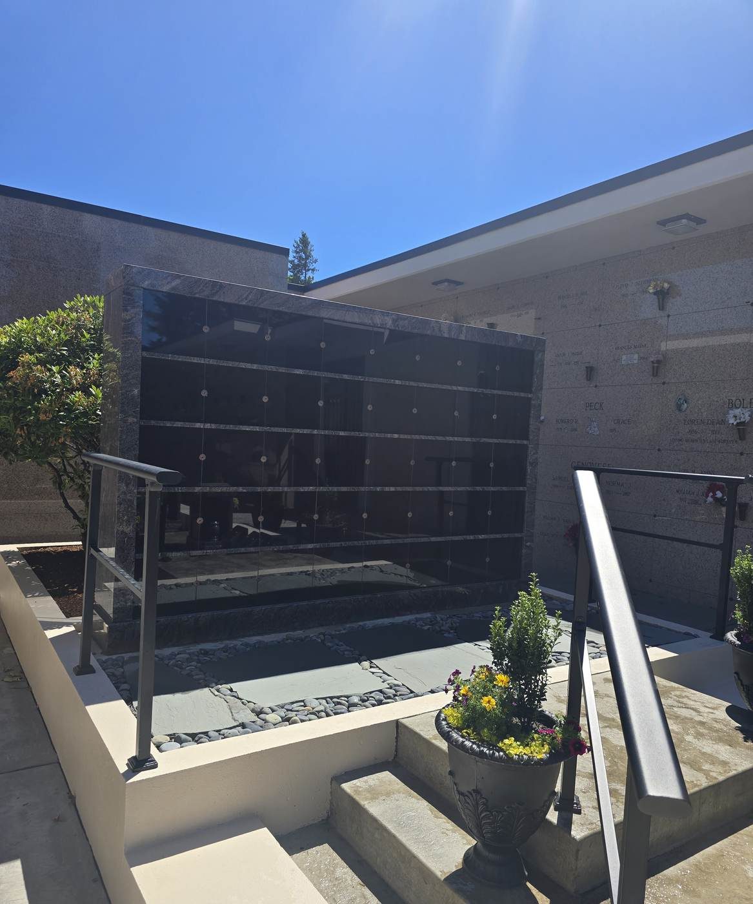
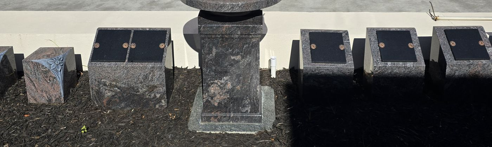

Granite Niches
What a Granite Niche Is

A niche is a compartment for cremated remains inside a permanent memorial structure. The urn goes in and the niche is closed with a stone front — that front is what you and your family see and touch when you visit.
“Granite front” means the closure is stone. The contents are not visible; the name, dates and any inscription are engraved into the granite or carried on a bronze plate. The wall reads as one uniform stone face rather than a row of individual displays.
Two rights of interment come with the niche at all three places here — two people, usually a husband and wife, on one contract. It is a permanent address, cared for by the cemetery, with no ground burial and no grave to open.
If you want the urn to be visible, that is a glass front, at the Mountain View and Eternal Light columbariums. Neither is covered here — see the Glass-Front Niche Guide, or the live maps (Mountain View · Eternal Light).
Prices in this guide come from Bonney Watson’s current price sheets for each location and are quoted as ranges, because within one wall the price depends on the row and the face. Your family service director will confirm the exact price and the current availability of any space before anything is written down. Prices are subject to change without notice.
Rock of Ages Columbarium
Rock of Ages is a granite columbarium built around an open courtyard, sheltered by a timber pavilion. Seven double-sided sections carry five tiers of five niches on each face — walls A, B and C on the south bank, E, F and G on the north, and Wall D standing across the west head. Faces that look into the courtyard are the interior faces; the rest look out over the lawn. Two granite memorial benches sit in the courtyard.
Rock of Ages niche
Depending on the wall and the tier. Interior courtyard faces and the higher tiers price above the outward-facing walls and the lower tiers; the least expensive niches on the site are the bottom tier of Wall G’s outside face, the most expensive the top tiers of the interior faces.
Two rights of interment come with the niche — two people may be placed in it. That is the standard here; there is no separate companion product to buy.


Opening and closing, recording, endowment care and any inscription are charged in addition to the price of the space. They are straightforward, and they differ by location and by what you choose — call or email me and I will put the exact figures in writing for you, with no obligation.
| Opening & closing, each inurnment | $875 |
| Recording fee, each | $235 |
| Inscription, each | $660 |
| Niche vase | $275 |
| Endowment Care Fund | 10% |
| Sales tax, where it applies | 10.4% |
Open the Rock of Ages niche map to see live availability and the exact price of any niche.
Garden of Meditation Niches
The Garden of Meditation niches are a stepped wall of polished black granite set into a planted garden, with bronze plates and bronze vase holders on the faces. The wall steps up from low wings at either end to a taller centre section. Its official property address is GOM-1-1-ROW-SPACE, so a specific niche reads as, for example, GOM-1-1-C-7.

Garden of Meditation niche
Depending on the row: the lower rows are the least expensive and the top of the centre section the most. Only part of the wall is offered at any one time — ask us to confirm today’s availability, and anything not currently priced is confirmed before it is quoted.
Sold as a companion niche (2 inurnment rights). Due to niche size, the Interlude Urn is required — two fit per niche. The companion capacity and the urn requirement are one fact, not two: the niche holds two people because two Interlude Urns fit in it. The Interlude Urn is $665 each, plus 10.4% sales tax — merchandise, quoted alongside the niche rather than as a fee. One niche vase is included.
Opening and closing, recording, endowment care and any inscription are charged in addition to the price of the space. They are straightforward, and they differ by location and by what you choose — call or email me and I will put the exact figures in writing for you, with no obligation.
| Opening & closing, each inurnment | $875 |
| Recording fee, each | $235 |
| Inscription, each — up to two on the niche front | $660 |
| Endowment Care Fund | 10% |
| Sales tax, on the inscription charge and on the Interlude Urn | 10.4% |
Where this schedule comes from. The Garden of Meditation price sheet prints its own opening & closing, recording and inscription charges, but Bonney Watson now applies the Mountain View Columbarium, June 2026 schedule here instead (confirmed 2026-07-31); the amounts above are that schedule, and they replace the older ones printed on the sheet. The Endowment Care Fund rate is unchanged at 10%. Your family service director will confirm the current charges before quoting. Two inscriptions may be added to the front of a companion niche — one for each person.
Open the Garden of Meditation niche map to see which niches are available and their exact prices.
Terrace Garden Memorial Path
The Terrace Garden Memorial Path is the newest cremation property at Washington Memorial Park. A paved terrace runs past a reflection pool, with a freestanding black granite niche bank at one end and a planted bed of individual memorials along the path. Everything here is new inventory.
Terrace Garden niches (TGN)
The bank is priced by row: the middle row is the highest, the top and bottom rows the lowest. Every niche carries two rights of interment. Niches are addressed TGN-<row>-<number>, for example TGN-C-4.


Other placements along the path
Nine individual memorials stand in one bed along the path, each holding cremated remains, and they carry 1–4 rights of interment depending on the piece. The single cremation posts are the smallest and least expensive; the benches, the companion columbarium with alcove and the birdbath are the largest. Ask us for the item-by-item sheet if you want to compare them side by side.

Opening and closing, recording, endowment care and any inscription are charged in addition to the price of the space. They are straightforward, and they differ by location and by what you choose — call or email me and I will put the exact figures in writing for you, with no obligation.
| Opening & closing, each inurnment | $875 |
| Recording fee, each | $235 |
| Inscription, each | $660 |
| Endowment Care Fund | 10% |
| Sales tax, on the inscription charge | 10.4% |
Where this schedule comes from. The Terrace Garden price sheet prints a sales price and a rights-of-interment count and nothing else — no fees appear on it at all. The charges above are the Mountain View Columbarium, June 2026 schedule, which Bonney Watson applies to the whole Terrace Garden Memorial Path (confirmed 2026-07-29). Because they are not printed on this area’s own sheet, your family service director will confirm the current charges before quoting.
Open the Terrace Garden Memorial Path map to see the niche bank and every placement along the path with its price and rights count.
The Three at a Glance
| Location | What it is | Rights per niche | Price range | Other charges |
|---|---|---|---|---|
| Rock of Ages Columbarium | Granite courtyard columbarium, seven double-sided walls under a pavilion | 2 | $7,995–$15,995 | O&C $875 · recording $235 · inscription $660 · vase $275 · E.C.F. 10% · tax 10.4% |
| Garden of Meditation | Stepped polished black granite garden wall, bronze plates and vase holders | 2 | $5,995–$8,995 | O&C $875 · recording $235 · inscription $660 (up to two) · E.C.F. 10% · tax 10.4% on inscription and urn Mountain View Columbarium schedule, replacing the amounts printed on this sheet — ask us to confirm |
| Terrace Garden Memorial Path | New granite niche bank (40 niches), plus benches, cremation posts, a companion columbarium and a birdbath along the path | 2 | $12,000–$16,000 other placements $8,000–$52,000, 1–4 rights |
O&C $875 · recording $235 · inscription $660 · E.C.F. 10% · tax 10.4% Mountain View Columbarium schedule, not printed on this sheet — ask us to confirm |
Talking It Over
Ranges in this guide are computed from the price and inventory data behind our live niche maps and are checked against them automatically whenever this page changes. They describe what is currently offered for sale; a range moves as spaces sell. The exact price of a specific niche is always the one your family service director confirms for you.